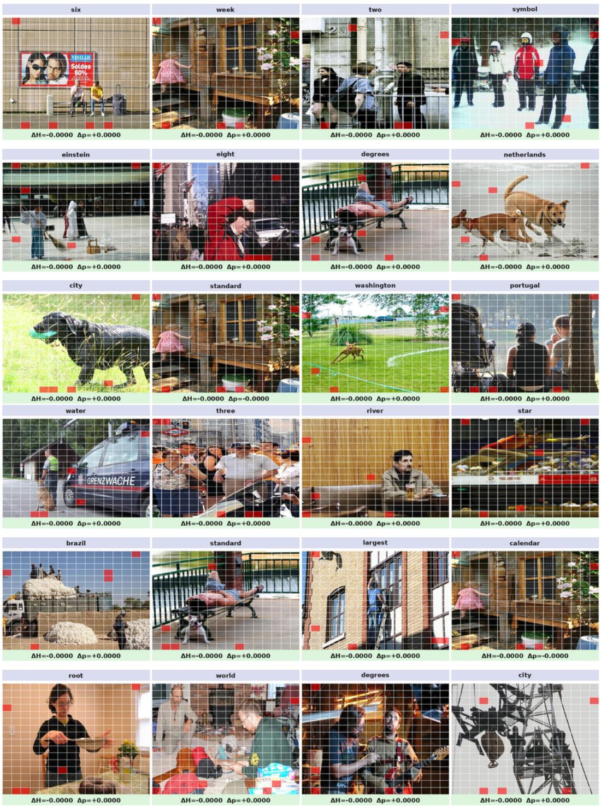

arXiv 新增 · P2 · 2026-05-26
Transcoders Trace Visual Grounding：多模态预训练不能只看对齐分数，还要知道视觉信息是否沿正确通路进入语言解码
相比只分解静态 residual representation 的 Sparse Autoencoder，Transcoder 更关注功能性更新，因此更适合解释视觉-语言交互。
编号2605.22902
优先级P2
类别arXiv 新增
会议arXiv 新增
方法用 Transcoder 近似 MLP 子层，作为 layer-wise computation 的 causal proxy，追踪 image patch 到 token generation direction 的计算路径。
来源arXiv / OpenReview
先说结论。多模态预训练不能只看对齐分数，还要知道视觉信息是否沿正确通路进入语言解码。 相比只分解静态 residual representation 的 Sparse Autoencoder，Transcoder 更关注功能性更新，因此更适合解释视觉-语言交互。


核心问题
多模态预训练不能只看对齐分数，还要知道视觉信息是否沿正确通路进入语言解码。
方法拆解
用 Transcoder 近似 MLP 子层，作为 layer-wise computation 的 causal proxy，追踪 image patch 到 token generation direction 的计算路径。
主要贡献
相比只分解静态 residual representation 的 Sparse Autoencoder，Transcoder 更关注功能性更新，因此更适合解释视觉-语言交互。
实验看点
在 Gemma 3-4B-IT 上，Transcoder attribution 在 patch ablation 下对 visually grounded tokens 的影响更强、更稳定；基于 circuit trace 的图特征预测 hallucination，AUC 0.68。
局限与读法
只在一个主要模型设置上验证；解释性指标与实际训练改进之间还隔一层。